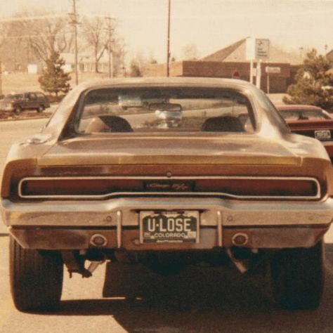
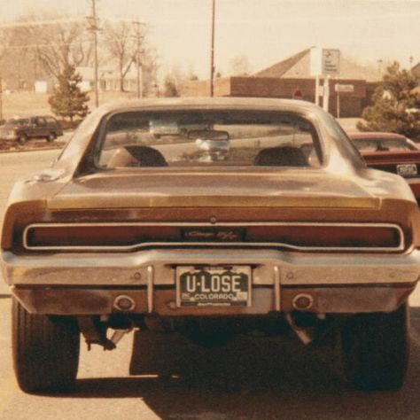

lançado no Brasil em 1973, é um clássico que marcou época com seu design robusto e espírito esportivo. Desenvolvido como uma alternativa ao Opala e ao Dodge Dart, o Maverick se destacou pelo visual musculoso, com frente imponente, faróis duplos e linhas agressivas típicas dos muscle cars americanos.
No Brasil, foi oferecido com motores 6 cilindros em linha e o potente V8 5.0 (302 pol³), que entregava desempenho empolgante e ronco característico. Apesar de seu visual arrojado, o modelo V8 era pesado e enfrentava críticas por consumo elevado e dirigibilidade em comparação a concorrentes mais equilibrados.
O interior era simples, mas com personalidade, e a versão GT se tornou a mais desejada, especialmente por entusiastas e colecionadores. Com o tempo, o Maverick ganhou status de ícone, sendo lembrado por sua presença marcante nas ruas e pistas da década de 70. Hoje, é um dos modelos mais cultuados da história da Ford no Brasil.

 
